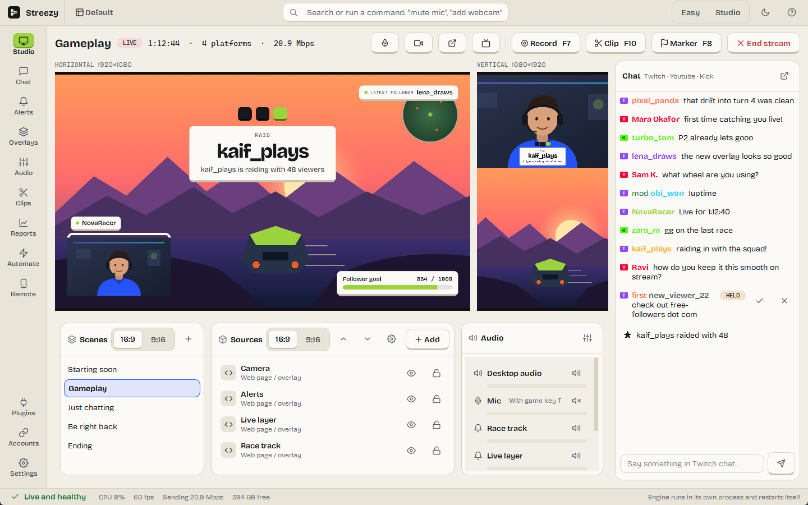
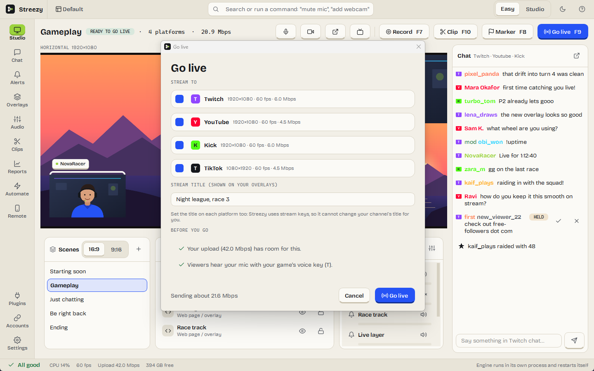
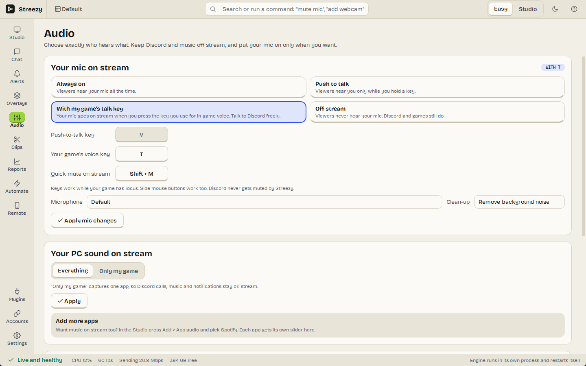
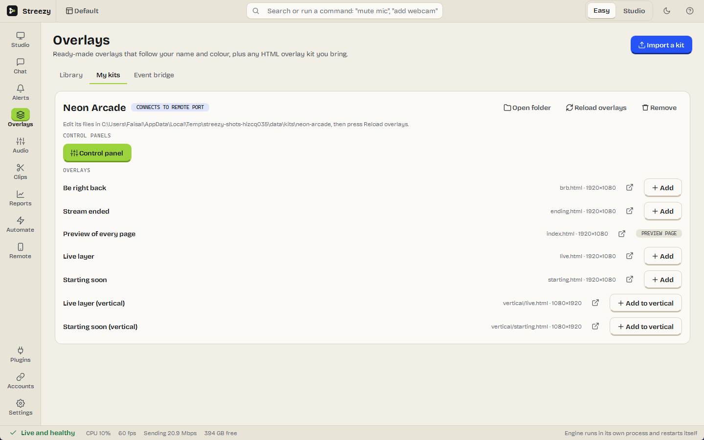
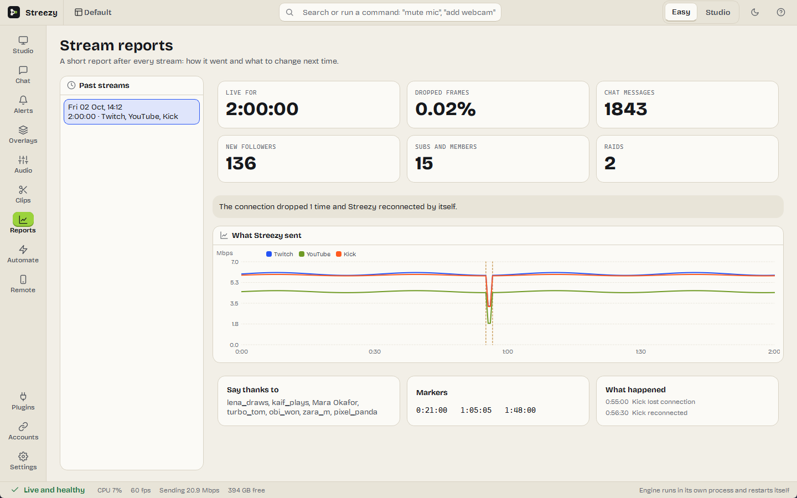

Stream to Twitch, YouTube, Kick and TikTok at the same time, horizontal and vertical, on the engine behind OBS Studio. Set up in two minutes. No watermark, no subscription, no account.
Windows 10/11 · 64-bit · one installer

Twitch, YouTube, Kick, TikTok, Facebook, X and custom servers, each at the right quality for it, fitted to your upload.
A second 9:16 canvas with its own layouts for Shorts, TikTok and Reels, live alongside your normal stream.
Your mic goes live only when you press your game's voice key, or push to talk. Capture just the game's sound, not calls or music.
Five built-in looks, or import any folder of HTML overlays, even kits made for OBS, with their control panels.
Twitch, YouTube and Kick chat in one list, alerts for every kind of support, a chat bot, and a filter that holds suspicious links.
The video engine runs on its own. If something crashes, it restarts in seconds and your stream reconnects by itself.
Also in the box: clips with one key, crash-safe recordings with separate audio tracks, a report after every stream, a phone remote, Stream Deck support, scene automation, OBS plugin and scene-collection support, a virtual camera, mini mode, and Ctrl K to run any command.




| Platform | File | How |
|---|---|---|
| Windows 10/11 (64-bit) | StreezySetup.exe | Run the installer. It sets up everything, including the virtual camera. |
Windows may say “Windows protected your PC” because Streezy is not code-signed yet.
Choose More info, then Run anyway. Each release lists the installer's SHA-256 checksum in
manifest.json, and Streezy checks it before installing an update.
Streezy is made by Faisal Malik at zylio, in the evenings. If it saved you a subscription, you can chip in. Nothing is locked behind it, ever.